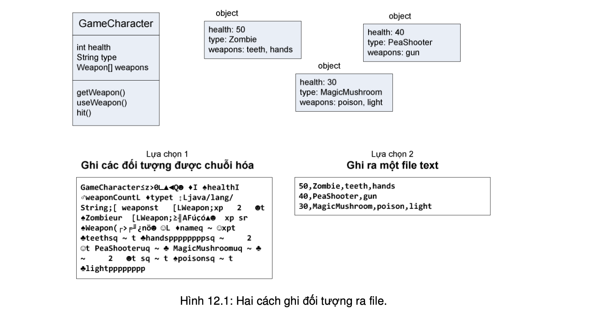

Các đối tượng có trạng thái và hành vi. Các hành vi lưu trú trong lớp, còn trạng thái nằm tại từng đối tượng. Vậy chuyện gì xảy ra nếu ta cần lưu trạng thái của một đối tượng? Chẳng hạn, trong một ứng dụng trò chơi, ta cần lưu trạng thái của một ván chơi, rồi khi người chơi quay lại chơi tiếp ván chơi đang dở, ta cần nạp lại trạng thái đã lưu. Cách làm truyền thống vất vả là lấy từng giá trị dữ liệu lưu trong mỗi đối tượng, rồi ghi các giá trị đó vào một file theo định dạng mà ta tự quy định. Hoặc theo phương pháp hướng đối tượng, ta chỉ việc là phẳng, hay đập bẹp, đối tượng khi lưu nó, rồi thổi phồng nó lên khi cần sử dụng trở lại. Cách truyền thống đôi khi vẫn cần đến, đặc biệt khi các file mà ứng dụng ghi sẽ được đọc bởi các ứng dụng không viết bằng Java. Chương này sẽ nói đến cả hai phương pháp lưu trữ đối tượng.
Có hai lựa chọn cho việc lưu trữ dữ liệu:
Ta lấy một ví dụ. Giả sử ta có một chương trình trò chơi kéo dài nhiều bài. Trong trò chơi, các nhân vật khỏe lên hoặc yếu đi, thu thập, sử dụng, đánh mất một số loại vũ khí. Người chơi không thể chơi liên tục từ bài 1 cho đến khi 'phá đảo'10 mà phải ngừng giữa chừng cho các hoạt động khác trong cuộc sống. Mỗi khi người chơi tạm dừng, chương trình cần lưu trạng thái của các nhân vật trò chơi để khôi phục lại trạng thái trò chơi khi người chơi tiếp tục. Cụ thể, ta hiện có ba nhân vật / đối tượng: xác sống (zombie), súng đậu (pea shooter), và nấm thần (magic mushroom).
Nếu dùng lựa chọn 1, ta ghi dạng chuỗi hóa ba đối tượng trên vào một file. File đó sẽ ở dạng nhị phân, nếu ta thử đọc theo dạng text thì khó có thể hiểu được nội dung. Nếu dùng lựa chọn 2, ta có thể tạo một file và ghi vào đó ba dòng text, mỗi dòng dành cho một đối tượng, các trường dữ liệu của mỗi đối tượng được tách nhau bởi dấu phảy. Xem minh họa tại Hình 12.1. File chứa các đối tượng chuỗi hóa khó đọc đối với con người. Tuy nhiên đối với việc chương trình khôi phục lại ba đối tượng từ file, biểu diễn chuỗi hóa lại là dạng dễ hiểu và an toàn hơn là dạng text. Chẳng hạn, đối với file text, do lỗi lô-gic của lập trình viên mà chương trình có thể đọc nhầm thứ tự các trường dữ liệu, kết quả là đối tượng zombie bị khôi phục thành nhân vật loại hands và có các vũ khí là zombie và teeth.